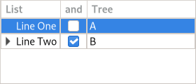

Gtk.TreeView¶
Example¶
- Subclasses:
None
Methods¶
- Inherited:
Gtk.Widget (181), GObject.Object (37), Gtk.Accessible (15), Gtk.Buildable (1), Gtk.Scrollable (9)
- Structs:
Virtual Methods¶
- Inherited:
Gtk.Widget (25), GObject.Object (7), Gtk.Accessible (6), Gtk.Buildable (9), Gtk.Scrollable (1)
|
|
|
|
|
|
|
|
|
|
|
|
|
|
|
|
Properties¶
- Inherited:
Name |
Type |
Flags |
Short Description |
|---|---|---|---|
r/w/en |
|||
r/w/en |
|||
r/w/en |
|||
r/w/en |
|||
r/w |
|||
r/w/en |
|||
r/w/en |
|||
r/w/en |
|||
r/w/en |
|||
r/w/en |
|||
r/w/en |
|||
r/w |
|||
r/w/en |
|||
r/w/en |
|||
r/w/en |
|||
r/w/en |
|||
r/w/en |
Signals¶
- Inherited:
Name |
Short Description |
|---|---|
The number of columns of the treeview has changed. |
|
The position of the cursor (focused cell) has changed. |
|
The |
|
The “row-activated” signal is emitted when the method [ |
|
The given row has been collapsed (child nodes are hidden). |
|
The given row has been expanded (child nodes are shown). |
|
The given row is about to be collapsed (hide its children nodes). |
|
The given row is about to be expanded (show its children nodes). |
|
Fields¶
- Inherited:
Name |
Type |
Access |
Description |
|---|---|---|---|
parent_instance |
r |
Class Details¶
- class Gtk.TreeView(**kwargs)¶
- Bases:
- Abstract:
No
- Structure:
A widget for displaying both trees and lists
Widget that displays any object that implements the [iface`Gtk`.TreeModel] interface.
Please refer to the tree widget conceptual overview for an overview of all the objects and data types related to the tree widget and how they work together.
- Coordinate systems in
Gtk.TreeViewAPI
Several different coordinate systems are exposed in the
GtkTreeViewAPI. These are:Widget coordinates: Coordinates relative to the widget (usually
widget->window).Bin window coordinates: Coordinates relative to the window that
Gtk.TreeViewrenders to.Tree coordinates: Coordinates relative to the entire scrollable area of
Gtk.TreeView. These coordinates start at (0, 0) for row 0 of the tree.
Several functions are available for converting between the different coordinate systems. The most common translations are between widget and bin window coordinates and between bin window and tree coordinates. For the former you can use [method`Gtk`.TreeView.convert_widget_to_bin_window_coords] (and vice versa), for the latter [method`Gtk`.TreeView.convert_bin_window_to_tree_coords] (and vice versa).
The
GtkTreeViewimplementation of theGtkBuildableinterface accepts [class`Gtk`.TreeViewColumn] objects as<child>elements and exposes the internal [class`Gtk`.TreeSelection] in UI definitions.An example of a UI definition fragment with
GtkTreeView:``xml <object class=”GtkTreeView” id=”treeview”>
<property name=”model”>liststore1</property> <child>
- <object class=”GtkTreeViewColumn” id=”test-column”>
<property name=”title”>Test</property> <child>
<object class=”GtkCellRendererText” id=”test-renderer”/> <attributes>
<attribute name=”text”>1</attribute>
</attributes>
</child>
</object>
</child> <child internal-child=”selection”>
- <object class=”GtkTreeSelection” id=”selection”>
<signal name=”changed” handler=”on_treeview_selection_changed”/>
</object>
</child>
</object> ``
- CSS nodes
`` treeview.view ├── header │ ├── button │ │ ╰── [sort-indicator] ┊ ┊ │ ╰── button │ ╰── [sort-indicator] │ ├── [rubberband] ╰── [dndtarget] ``
GtkTreeViewhas a main CSS node with nametreeviewand style class.view. It has a subnode with nameheader, which is the parent for all the column header widgets’ CSS nodes.Each column header consists of a
button, which among other content, has a child with namesort-indicator, which carries the.ascendingor.descendingstyle classes when the column header should show a sort indicator. The CSS is expected to provide a suitable image using the-gtk-icon-sourceproperty.For rubberband selection, a subnode with name
rubberbandis used.For the drop target location during DND, a subnode with name
dndtargetis used.Deprecated since version 4.10: Use [class`Gtk`.ListView] for lists, and [class`Gtk`.ColumnView] for tabular lists
- classmethod new()[source]¶
- Returns:
A newly created
GtkTreeViewwidget.- Return type:
Creates a new
GtkTreeViewwidget.Deprecated since version 4.10: Use [class`Gtk`.ListView] or [class`Gtk`.ColumnView] instead
- classmethod new_with_model(model)[source]¶
- Parameters:
model (
Gtk.TreeModel) – the model.- Returns:
A newly created
GtkTreeViewwidget.- Return type:
Creates a new
GtkTreeViewwidget with the model initialized to model.Deprecated since version 4.10: Use [class`Gtk`.ListView] or [class`Gtk`.ColumnView] instead
- append_column(column)[source]¶
- Parameters:
column (
Gtk.TreeViewColumn) – TheGtkTreeViewColumnto add.- Returns:
The number of columns in self after appending.
- Return type:
Appends column to the list of columns. If self has “fixed_height” mode enabled, then column must have its “sizing” property set to be
Gtk.TreeViewColumnSizing.FIXED.Deprecated since version 4.10: Use [class`Gtk`.ListView] or [class`Gtk`.ColumnView] instead
- collapse_all()[source]¶
Recursively collapses all visible, expanded nodes in self.
Deprecated since version 4.10: Use [class`Gtk`.ListView] or [class`Gtk`.ColumnView] instead
- collapse_row(path)[source]¶
- Parameters:
path (
Gtk.TreePath) – path to a row in the self- Returns:
Trueif the row was collapsed.- Return type:
Collapses a row (hides its child rows, if they exist).
Deprecated since version 4.10: Use [class`Gtk`.ListView] or [class`Gtk`.ColumnView] instead
- columns_autosize()[source]¶
Resizes all columns to their optimal width. Only works after the treeview has been realized.
Deprecated since version 4.10: Use [class`Gtk`.ListView] or [class`Gtk`.ColumnView] instead
- convert_bin_window_to_tree_coords(bx, by)[source]¶
- Parameters:
- Returns:
- tx:
return location for tree X coordinate
- ty:
return location for tree Y coordinate
- Return type:
Converts bin_window coordinates to coordinates for the tree (the full scrollable area of the tree).
Deprecated since version 4.10: Use [class`Gtk`.ListView] or [class`Gtk`.ColumnView] instead
- convert_bin_window_to_widget_coords(bx, by)[source]¶
- Parameters:
- Returns:
- wx:
return location for widget X coordinate
- wy:
return location for widget Y coordinate
- Return type:
Converts bin_window coordinates to widget relative coordinates.
Deprecated since version 4.10: Use [class`Gtk`.ListView] or [class`Gtk`.ColumnView] instead
- convert_tree_to_bin_window_coords(tx, ty)[source]¶
- Parameters:
- Returns:
- bx:
return location for X coordinate relative to bin_window
- by:
return location for Y coordinate relative to bin_window
- Return type:
Converts tree coordinates (coordinates in full scrollable area of the tree) to bin_window coordinates.
Deprecated since version 4.10: Use [class`Gtk`.ListView] or [class`Gtk`.ColumnView] instead
- convert_tree_to_widget_coords(tx, ty)[source]¶
- Parameters:
- Returns:
- wx:
return location for widget X coordinate
- wy:
return location for widget Y coordinate
- Return type:
Converts tree coordinates (coordinates in full scrollable area of the tree) to widget coordinates.
Deprecated since version 4.10: Use [class`Gtk`.ListView] or [class`Gtk`.ColumnView] instead
- convert_widget_to_bin_window_coords(wx, wy)[source]¶
- Parameters:
- Returns:
- bx:
return location for bin_window X coordinate
- by:
return location for bin_window Y coordinate
- Return type:
Converts widget coordinates to coordinates for the bin_window.
Deprecated since version 4.10: Use [class`Gtk`.ListView] or [class`Gtk`.ColumnView] instead
- convert_widget_to_tree_coords(wx, wy)[source]¶
- Parameters:
- Returns:
- tx:
return location for tree X coordinate
- ty:
return location for tree Y coordinate
- Return type:
Converts widget coordinates to coordinates for the tree (the full scrollable area of the tree).
Deprecated since version 4.10: Use [class`Gtk`.ListView] or [class`Gtk`.ColumnView] instead
- create_row_drag_icon(path)[source]¶
- Parameters:
path (
Gtk.TreePath) – aGtkTreePathin self- Returns:
a newly-allocated surface of the drag icon.
- Return type:
Creates a
cairo_surface_trepresentation of the row at path. This image is used for a drag icon.Deprecated since version 4.10: Use [class`Gtk`.ListView] or [class`Gtk`.ColumnView] instead
- enable_model_drag_dest(formats, actions)[source]¶
- Parameters:
formats (
Gdk.ContentFormats) – the target formats that the drag will supportactions (
Gdk.DragAction) – the bitmask of possible actions for a drag from this widget
Turns self into a drop destination for automatic DND. Calling this method sets
GtkTreeView:reorderabletoFalse.Deprecated since version 4.10: Use [class`Gtk`.ListView] or [class`Gtk`.ColumnView] instead
- enable_model_drag_source(start_button_mask, formats, actions)[source]¶
- Parameters:
start_button_mask (
Gdk.ModifierType) – Mask of allowed buttons to start dragformats (
Gdk.ContentFormats) – the target formats that the drag will supportactions (
Gdk.DragAction) – the bitmask of possible actions for a drag from this widget
Turns self into a drag source for automatic DND. Calling this method sets
GtkTreeView:reorderabletoFalse.Deprecated since version 4.10: Use [class`Gtk`.ListView] or [class`Gtk`.ColumnView] instead
- expand_all()[source]¶
Recursively expands all nodes in the self.
Deprecated since version 4.10: Use [class`Gtk`.ListView] or [class`Gtk`.ColumnView] instead
- expand_row(path, open_all)[source]¶
- Parameters:
path (
Gtk.TreePath) – path to a rowopen_all (
bool) – whether to recursively expand, or just expand immediate children
- Returns:
Trueif the row existed and had children- Return type:
Opens the row so its children are visible.
Deprecated since version 4.10: Use [class`Gtk`.ListView] or [class`Gtk`.ColumnView] instead
- expand_to_path(path)[source]¶
- Parameters:
path (
Gtk.TreePath) – path to a row.
Expands the row at path. This will also expand all parent rows of path as necessary.
Deprecated since version 4.10: Use [class`Gtk`.ListView] or [class`Gtk`.ColumnView] instead
- get_activate_on_single_click()[source]¶
-
Gets the setting set by
Gtk.TreeView.set_activate_on_single_click().Deprecated since version 4.10: Use [class`Gtk`.ListView] or [class`Gtk`.ColumnView] instead
- get_background_area(path, column)[source]¶
- Parameters:
path (
Gtk.TreePathorNone) – aGtkTreePathfor the row, orNoneto get only horizontal coordinatescolumn (
Gtk.TreeViewColumnorNone) – aGtkTreeViewColumnfor the column, orNoneto get only vertical coordinates
- Returns:
rectangle to fill with cell background rect
- Return type:
rect:
Gdk.Rectangle
Fills the bounding rectangle in bin_window coordinates for the cell at the row specified by path and the column specified by column. If path is
None, or points to a node not found in the tree, the y and height fields of the rectangle will be filled with 0. If column isNone, the x and width fields will be filled with 0. The returned rectangle is equivalent to the background_area passed to gtk_cell_renderer_render(). These background areas tile to cover the entire bin window. Contrast with the cell_area, returned byGtk.TreeView.get_cell_area(), which returns only the cell itself, excluding surrounding borders and the tree expander area.Deprecated since version 4.10: Use [class`Gtk`.ListView] or [class`Gtk`.ColumnView] instead
- get_cell_area(path, column)[source]¶
- Parameters:
path (
Gtk.TreePathorNone) – aGtkTreePathfor the row, orNoneto get only horizontal coordinatescolumn (
Gtk.TreeViewColumnorNone) – aGtkTreeViewColumnfor the column, orNoneto get only vertical coordinates
- Returns:
rectangle to fill with cell rect
- Return type:
rect:
Gdk.Rectangle
Fills the bounding rectangle in bin_window coordinates for the cell at the row specified by path and the column specified by column. If path is
None, or points to a path not currently displayed, the y and height fields of the rectangle will be filled with 0. If column isNone, the x and width fields will be filled with 0. The sum of all cell rects does not cover the entire tree; there are extra pixels in between rows, for example. The returned rectangle is equivalent to the cell_area passed to gtk_cell_renderer_render(). This function is only valid if self is realized.Deprecated since version 4.10: Use [class`Gtk`.ListView] or [class`Gtk`.ColumnView] instead
- get_column(n)[source]¶
- Parameters:
n (
int) – The position of the column, counting from 0.- Returns:
The
GtkTreeViewColumn, orNoneif the position is outside the range of columns.- Return type:
Gets the
GtkTreeViewColumnat the given position in the #tree_view.Deprecated since version 4.10: Use [class`Gtk`.ListView] or [class`Gtk`.ColumnView] instead
- get_columns()[source]¶
- Returns:
A list of ``GtkTreeViewColumn``s
- Return type:
Returns a
GListof all the ``GtkTreeViewColumn``s currently in self. The returned list must be freed with g_list_free ().Deprecated since version 4.10: Use [class`Gtk`.ListView] or [class`Gtk`.ColumnView] instead
- get_cursor()[source]¶
- Returns:
- path:
A pointer to be filled with the current cursor path
- focus_column:
A pointer to be filled with the current focus column
- Return type:
(path:
Gtk.TreePathorNone, focus_column:Gtk.TreeViewColumnorNone)
Fills in path and focus_column with the current path and focus column. If the cursor isn’t currently set, then path will be
None. If no column currently has focus, then focus_column will beNone.The returned
GtkTreePathmust be freed withGtk.TreePath.free() when you are done with it.Deprecated since version 4.10: Use [class`Gtk`.ListView] or [class`Gtk`.ColumnView] instead
- get_dest_row_at_pos(drag_x, drag_y)[source]¶
- Parameters:
- Returns:
Noneif there is no row at the given position or a tuple containing:- path:
the path of the highlighted row
- pos:
the drop position
- Return type:
(path:
Gtk.TreePathorNone, pos:Gtk.TreeViewDropPosition) orNone
Determines the destination row for a given position. drag_x and drag_y are expected to be in widget coordinates. This function is only meaningful if self is realized. Therefore this function will always return
Noneif self is not realized or does not have a model.Deprecated since version 4.10: Use [class`Gtk`.ListView] or [class`Gtk`.ColumnView] instead
- get_drag_dest_row()[source]¶
- Returns:
- path:
Return location for the path of the highlighted row
- pos:
Return location for the drop position
- Return type:
(path:
Gtk.TreePathorNone, pos:Gtk.TreeViewDropPosition)
Gets information about the row that is highlighted for feedback.
Deprecated since version 4.10: Use [class`Gtk`.ListView] or [class`Gtk`.ColumnView] instead
- get_enable_search()[source]¶
- Returns:
whether or not to let the user search interactively
- Return type:
Returns whether or not the tree allows to start interactive searching by typing in text.
Deprecated since version 4.10: Use [class`Gtk`.ListView] or [class`Gtk`.ColumnView] instead
- get_enable_tree_lines()[source]¶
-
Returns whether or not tree lines are drawn in self.
Deprecated since version 4.10: Use [class`Gtk`.ListView] or [class`Gtk`.ColumnView] instead
- get_expander_column()[source]¶
- Returns:
The expander column.
- Return type:
Returns the column that is the current expander column, or
Noneif none has been set. This column has the expander arrow drawn next to it.Deprecated since version 4.10: Use [class`Gtk`.ListView] or [class`Gtk`.ColumnView] instead
- get_fixed_height_mode()[source]¶
-
Returns whether fixed height mode is turned on for self.
Deprecated since version 4.10: Use [class`Gtk`.ListView] or [class`Gtk`.ColumnView] instead
- get_grid_lines()[source]¶
- Returns:
a ``GtkTreeView``GridLines value indicating which grid lines are enabled.
- Return type:
Returns which grid lines are enabled in self.
Deprecated since version 4.10: Use [class`Gtk`.ListView] or [class`Gtk`.ColumnView] instead
- get_headers_clickable()[source]¶
-
Returns whether all header columns are clickable.
Deprecated since version 4.10: Use [class`Gtk`.ListView] or [class`Gtk`.ColumnView] instead
- get_headers_visible()[source]¶
- Returns:
Whether the headers are visible or not.
- Return type:
Returns
Trueif the headers on the self are visible.Deprecated since version 4.10: Use [class`Gtk`.ListView] or [class`Gtk`.ColumnView] instead
- get_hover_expand()[source]¶
-
Returns whether hover expansion mode is turned on for self.
Deprecated since version 4.10: Use [class`Gtk`.ListView] or [class`Gtk`.ColumnView] instead
- get_hover_selection()[source]¶
-
Returns whether hover selection mode is turned on for self.
Deprecated since version 4.10: Use [class`Gtk`.ListView] or [class`Gtk`.ColumnView] instead
- get_level_indentation()[source]¶
- Returns:
the amount of extra indentation for child levels in self. A return value of 0 means that this feature is disabled.
- Return type:
Returns the amount, in pixels, of extra indentation for child levels in self.
Deprecated since version 4.10: Use [class`Gtk`.ListView] or [class`Gtk`.ColumnView] instead
- get_model()[source]¶
- Returns:
A
GtkTreeModel- Return type:
Returns the model the
GtkTreeViewis based on. ReturnsNoneif the model is unset.Deprecated since version 4.10: Use [class`Gtk`.ListView] or [class`Gtk`.ColumnView] instead
- get_n_columns()[source]¶
- Returns:
The number of columns in the self
- Return type:
Queries the number of columns in the given self.
Deprecated since version 4.10: Use [class`Gtk`.ListView] or [class`Gtk`.ColumnView] instead
- get_path_at_pos(x, y)[source]¶
- Parameters:
- Returns:
Noneif the row doesn’t exist at that coordinates or a tuple containing:- path:
- column:
- cell_x:
the X coordinate relative to the cell
- cell_y:
the Y coordinate relative to the cell
- Return type:
(path:
Gtk.TreePathorNone, column:Gtk.TreeViewColumnorNone, cell_x:int, cell_y:int) orNone
Finds the path at the point (x, y), relative to bin_window coordinates. That is, x and y are relative to an events coordinates. Widget-relative coordinates must be converted using
Gtk.TreeView.convert_widget_to_bin_window_coords(). It is primarily for things like popup menus. If path is non-None, then it will be filled with theGtkTreePathat that point. This path should be freed withGtk.TreePath.free(). If column is non-None, then it will be filled with the column at that point. cell_x and cell_y return the coordinates relative to the cell background (i.e. the background_area passed to gtk_cell_renderer_render()). This function is only meaningful if self is realized. Therefore this function will always returnFalseif self is not realized or does not have a model.For converting widget coordinates (eg. the ones you get from
Gtk.Widget::query-tooltip), please seeGtk.TreeView.convert_widget_to_bin_window_coords().Deprecated since version 4.10: Use [class`Gtk`.ListView] or [class`Gtk`.ColumnView] instead
- get_reorderable()[source]¶
-
Retrieves whether the user can reorder the tree via drag-and-drop. See
Gtk.TreeView.set_reorderable().Deprecated since version 4.10: Use [class`Gtk`.ListView] or [class`Gtk`.ColumnView] instead
- get_rubber_banding()[source]¶
-
Returns whether rubber banding is turned on for self. If the selection mode is
Gtk.SelectionMode.MULTIPLE, rubber banding will allow the user to select multiple rows by dragging the mouse.Deprecated since version 4.10: Use [class`Gtk`.ListView] or [class`Gtk`.ColumnView] instead
- get_search_column()[source]¶
- Returns:
the column the interactive search code searches in.
- Return type:
Gets the column searched on by the interactive search code.
Deprecated since version 4.10: Use [class`Gtk`.ListView] or [class`Gtk`.ColumnView] instead
- get_search_entry()[source]¶
- Returns:
the entry currently in use as search entry.
- Return type:
Gtk.EditableorNone
Returns the
GtkEntrywhich is currently in use as interactive search entry for self. In case the built-in entry is being used,Nonewill be returned.Deprecated since version 4.10: Use [class`Gtk`.ListView] or [class`Gtk`.ColumnView] instead
- get_selection()[source]¶
- Returns:
A
GtkTreeSelectionobject.- Return type:
Gets the
GtkTreeSelectionassociated with self.Deprecated since version 4.10: Use [class`Gtk`.ListView] or [class`Gtk`.ColumnView] instead
- get_show_expanders()[source]¶
-
Returns whether or not expanders are drawn in self.
Deprecated since version 4.10: Use [class`Gtk`.ListView] or [class`Gtk`.ColumnView] instead
- get_tooltip_column()[source]¶
- Returns:
the index of the tooltip column that is currently being used, or -1 if this is disabled.
- Return type:
Returns the column of self’s model which is being used for displaying tooltips on self’s rows.
Deprecated since version 4.10: Use [class`Gtk`.ListView] or [class`Gtk`.ColumnView] instead
- get_tooltip_context(x, y, keyboard_tip)[source]¶
- Parameters:
- Returns:
whether or not the given tooltip context points to a row
- model:
a pointer to receive a
GtkTreeModel- path:
a pointer to receive a
GtkTreePath- iter:
a pointer to receive a
GtkTreeIter
- Return type:
(
bool, model:Gtk.TreeModelorNone, path:Gtk.TreePath, iter:Gtk.TreeIter)
This function is supposed to be used in a
::query-tooltipsignal handler forGtkTreeView. The x, y and keyboard_tip values which are received in the signal handler, should be passed to this function without modification.The return value indicates whether there is a tree view row at the given coordinates (
True) or not (False) for mouse tooltips. For keyboard tooltips the row returned will be the cursor row. WhenTrue, then any of model, path and iter which have been provided will be set to point to that row and the corresponding model. x and y will always be converted to be relative to self’s bin_window if keyboard_tooltip isFalse.Deprecated since version 4.10: Use [class`Gtk`.ListView] or [class`Gtk`.ColumnView] instead
- get_visible_range()[source]¶
- Returns:
Either
Noneif there is no visible range or a tuple containing:- start_path:
start of region
- end_path:
end of region
- Return type:
(start_path:
Gtk.TreePath, end_path:Gtk.TreePath) orNone
Returns the first and last visible path. Note that there may be invisible paths in between.
Deprecated since version 4.10: Use [class`Gtk`.ListView] or [class`Gtk`.ColumnView] instead
- get_visible_rect()[source]¶
- Returns:
rectangle to fill
- Return type:
visible_rect:
Gdk.Rectangle
Fills visible_rect with the currently-visible region of the buffer, in tree coordinates. Convert to bin_window coordinates with
Gtk.TreeView.convert_tree_to_bin_window_coords(). Tree coordinates start at 0,0 for row 0 of the tree, and cover the entire scrollable area of the tree.Deprecated since version 4.10: Use [class`Gtk`.ListView] or [class`Gtk`.ColumnView] instead
- insert_column(column, position)[source]¶
- Parameters:
column (
Gtk.TreeViewColumn) – TheGtkTreeViewColumnto be inserted.position (
int) – The position to insert column in.
- Returns:
The number of columns in self after insertion.
- Return type:
This inserts the column into the self at position. If position is -1, then the column is inserted at the end. If self has “fixed_height” mode enabled, then column must have its “sizing” property set to be
Gtk.TreeViewColumnSizing.FIXED.Deprecated since version 4.10: Use [class`Gtk`.ListView] or [class`Gtk`.ColumnView] instead
- insert_column_with_attributes(position, title, cell, **kwargs)[source]¶
- Parameters:
position (
int) – The position to insert the new column intitle (
str) – The title to set the header tocell (
Gtk.CellRenderer) – TheGtk.CellRenderer
Creates a new
GtkTreeViewColumnand inserts it into the self at position. If position is -1, then the newly created column is inserted at the end. The column is initialized with the attributes given. If self has “fixed_height” mode enabled, then the new column will have its sizing property set to beGtk.TreeViewColumnSizing.FIXED.Deprecated since version 4.10: Use [class`Gtk`.ListView] or [class`Gtk`.ColumnView] instead
- insert_column_with_data_func(position, title, cell, func, *data)[source]¶
- Parameters:
position (
int) – Position to insert, -1 for appendtitle (
str) – column titlecell (
Gtk.CellRenderer) – cell renderer for columnfunc (
Gtk.TreeCellDataFunc) – function to set attributes of cell renderer
- Returns:
number of columns in the tree view post-insert
- Return type:
Convenience function that inserts a new column into the
GtkTreeViewwith the given cell renderer and aGtkTreeCellDataFuncto set cell renderer attributes (normally using data from the model). See alsoGtk.TreeViewColumn.set_cell_data_func(),Gtk.TreeViewColumn.pack_start(). If self has “fixed_height” mode enabled, then the new column will have its “sizing” property set to beGtk.TreeViewColumnSizing.FIXED.Deprecated since version 4.10: Use [class`Gtk`.ListView] or [class`Gtk`.ColumnView] instead
- is_blank_at_pos(x, y)[source]¶
- Parameters:
- Returns:
Trueif the area at the given coordinates is blank,Falseotherwise.- path:
A pointer to a
GtkTreePathpointer to be filled in- column:
A pointer to a
GtkTreeViewColumnpointer to be filled in- cell_x:
A pointer where the X coordinate relative to the cell can be placed
- cell_y:
A pointer where the Y coordinate relative to the cell can be placed
- Return type:
(
bool, path:Gtk.TreePathorNone, column:Gtk.TreeViewColumnorNone, cell_x:int, cell_y:int)
Determine whether the point (x, y) in self is blank, that is no cell content nor an expander arrow is drawn at the location. If so, the location can be considered as the background. You might wish to take special action on clicks on the background, such as clearing a current selection, having a custom context menu or starting rubber banding.
The x and y coordinate that are provided must be relative to bin_window coordinates. Widget-relative coordinates must be converted using
Gtk.TreeView.convert_widget_to_bin_window_coords().For converting widget coordinates (eg. the ones you get from
Gtk.Widget::query-tooltip), please seeGtk.TreeView.convert_widget_to_bin_window_coords().The path, column, cell_x and cell_y arguments will be filled in likewise as for
Gtk.TreeView.get_path_at_pos(). Please seeGtk.TreeView.get_path_at_pos() for more information.Deprecated since version 4.10: Use [class`Gtk`.ListView] or [class`Gtk`.ColumnView] instead
- is_rubber_banding_active()[source]¶
-
Returns whether a rubber banding operation is currently being done in self.
Deprecated since version 4.10: Use [class`Gtk`.ListView] or [class`Gtk`.ColumnView] instead
- map_expanded_rows(func, *data)[source]¶
- Parameters:
func (
Gtk.TreeViewMappingFunc) – A function to be calleddata (
objectorNone) – User data to be passed to the function.
Calls func on all expanded rows.
Deprecated since version 4.10: Use [class`Gtk`.ListView] or [class`Gtk`.ColumnView] instead
- move_column_after(column, base_column)[source]¶
- Parameters:
column (
Gtk.TreeViewColumn) – TheGtkTreeViewColumnto be moved.base_column (
Gtk.TreeViewColumnorNone) – TheGtkTreeViewColumnto be moved relative to
Moves column to be after to base_column. If base_column is
None, then column is placed in the first position.Deprecated since version 4.10: Use [class`Gtk`.ListView] or [class`Gtk`.ColumnView] instead
- remove_column(column)[source]¶
- Parameters:
column (
Gtk.TreeViewColumn) – TheGtkTreeViewColumnto remove.- Returns:
The number of columns in self after removing.
- Return type:
Removes column from self.
Deprecated since version 4.10: Use [class`Gtk`.ListView] or [class`Gtk`.ColumnView] instead
- row_activated(path, column)[source]¶
- Parameters:
path (
Gtk.TreePath) – TheGtkTreePathto be activated.column (
Gtk.TreeViewColumnorNone) – TheGtkTreeViewColumnto be activated.
Activates the cell determined by path and column.
Deprecated since version 4.10: Use [class`Gtk`.ListView] or [class`Gtk`.ColumnView] instead
- row_expanded(path)[source]¶
- Parameters:
path (
Gtk.TreePath) – AGtkTreePathto test expansion state.- Returns:
Trueif #path is expanded.- Return type:
Returns
Trueif the node pointed to by path is expanded in self.Deprecated since version 4.10: Use [class`Gtk`.ListView] or [class`Gtk`.ColumnView] instead
- scroll_to_cell(path, column, use_align, row_align, col_align)[source]¶
- Parameters:
path (
Gtk.TreePathorNone) – The path of the row to move tocolumn (
Gtk.TreeViewColumnorNone) – TheGtkTreeViewColumnto move horizontally touse_align (
bool) – whether to use alignment arguments, orFalse.row_align (
float) – The vertical alignment of the row specified by path.col_align (
float) – The horizontal alignment of the column specified by column.
Moves the alignments of self to the position specified by column and path. If column is
None, then no horizontal scrolling occurs. Likewise, if path isNoneno vertical scrolling occurs. At a minimum, one of column or path need to be non-None. row_align determines where the row is placed, and col_align determines where column is placed. Both are expected to be between 0.0 and 1.0. 0.0 means left/top alignment, 1.0 means right/bottom alignment, 0.5 means center.If use_align is
False, then the alignment arguments are ignored, and the tree does the minimum amount of work to scroll the cell onto the screen. This means that the cell will be scrolled to the edge closest to its current position. If the cell is currently visible on the screen, nothing is done.This function only works if the model is set, and path is a valid row on the model. If the model changes before the self is realized, the centered path will be modified to reflect this change.
Deprecated since version 4.10: Use [class`Gtk`.ListView] or [class`Gtk`.ColumnView] instead
- scroll_to_point(tree_x, tree_y)[source]¶
- Parameters:
Scrolls the tree view such that the top-left corner of the visible area is tree_x, tree_y, where tree_x and tree_y are specified in tree coordinates. The self must be realized before this function is called. If it isn’t, you probably want to be using
Gtk.TreeView.scroll_to_cell().If either tree_x or tree_y are -1, then that direction isn’t scrolled.
Deprecated since version 4.10: Use [class`Gtk`.ListView] or [class`Gtk`.ColumnView] instead
- set_activate_on_single_click(single)[source]¶
-
Cause the
GtkTreeView::row-activatedsignal to be emitted on a single click instead of a double click.Deprecated since version 4.10: Use [class`Gtk`.ListView] or [class`Gtk`.ColumnView] instead
- set_column_drag_function(func, *user_data)[source]¶
- Parameters:
func (
Gtk.TreeViewColumnDropFuncorNone) – A function to determine which columns are reorderable
Sets a user function for determining where a column may be dropped when dragged. This function is called on every column pair in turn at the beginning of a column drag to determine where a drop can take place. The arguments passed to func are: the self, the
GtkTreeViewColumnbeing dragged, the twoGtkTreeViewColumn``s determining the drop spot, and `user_data`. If either of the ``GtkTreeViewColumnarguments for the drop spot areNone, then they indicate an edge. If func is set to beNone, then self reverts to the default behavior of allowing all columns to be dropped everywhere.Deprecated since version 4.10: Use [class`Gtk`.ListView] or [class`Gtk`.ColumnView] instead
- set_cursor(path, focus_column, start_editing)[source]¶
- Parameters:
path (
Gtk.TreePath) – AGtkTreePathfocus_column (
Gtk.TreeViewColumnorNone) – AGtkTreeViewColumnstart_editing (
bool) –Trueif the specified cell should start being edited.
Sets the current keyboard focus to be at path, and selects it. This is useful when you want to focus the user’s attention on a particular row. If focus_column is not
None, then focus is given to the column specified by it. Additionally, if focus_column is specified, and start_editing isTrue, then editing should be started in the specified cell. This function is often followed by gtk_widget_grab_focus (self) in order to give keyboard focus to the widget. Please note that editing can only happen when the widget is realized.If path is invalid for model, the current cursor (if any) will be unset and the function will return without failing.
Deprecated since version 4.10: Use [class`Gtk`.ListView] or [class`Gtk`.ColumnView] instead
- set_cursor_on_cell(path, focus_column, focus_cell, start_editing)[source]¶
- Parameters:
path (
Gtk.TreePath) – AGtkTreePathfocus_column (
Gtk.TreeViewColumnorNone) – AGtkTreeViewColumnfocus_cell (
Gtk.CellRendererorNone) – AGtkCellRendererstart_editing (
bool) –Trueif the specified cell should start being edited.
Sets the current keyboard focus to be at path, and selects it. This is useful when you want to focus the user’s attention on a particular row. If focus_column is not
None, then focus is given to the column specified by it. If focus_column and focus_cell are notNone, and focus_column contains 2 or more editable or activatable cells, then focus is given to the cell specified by focus_cell. Additionally, if focus_column is specified, and start_editing isTrue, then editing should be started in the specified cell. This function is often followed by gtk_widget_grab_focus (self) in order to give keyboard focus to the widget. Please note that editing can only happen when the widget is realized.If path is invalid for model, the current cursor (if any) will be unset and the function will return without failing.
Deprecated since version 4.10: Use [class`Gtk`.ListView] or [class`Gtk`.ColumnView] instead
- set_drag_dest_row(path, pos)[source]¶
- Parameters:
path (
Gtk.TreePathorNone) – The path of the row to highlightpos (
Gtk.TreeViewDropPosition) – Specifies whether to drop before, after or into the row
Sets the row that is highlighted for feedback. If path is
None, an existing highlight is removed.Deprecated since version 4.10: Use [class`Gtk`.ListView] or [class`Gtk`.ColumnView] instead
- set_enable_search(enable_search)[source]¶
-
If enable_search is set, then the user can type in text to search through the tree interactively (this is sometimes called “typeahead find”).
Note that even if this is
False, the user can still initiate a search using the “start-interactive-search” key binding.Deprecated since version 4.10: Use [class`Gtk`.ListView] or [class`Gtk`.ColumnView] instead
- set_enable_tree_lines(enabled)[source]¶
-
Sets whether to draw lines interconnecting the expanders in self. This does not have any visible effects for lists.
Deprecated since version 4.10: Use [class`Gtk`.ListView] or [class`Gtk`.ColumnView] instead
- set_expander_column(column)[source]¶
- Parameters:
column (
Gtk.TreeViewColumnorNone) –None, or the column to draw the expander arrow at.
Sets the column to draw the expander arrow at. It must be in self. If column is
None, then the expander arrow is always at the first visible column.If you do not want expander arrow to appear in your tree, set the expander column to a hidden column.
Deprecated since version 4.10: Use [class`Gtk`.ListView] or [class`Gtk`.ColumnView] instead
- set_fixed_height_mode(enable)[source]¶
-
Enables or disables the fixed height mode of self. Fixed height mode speeds up
GtkTreeViewby assuming that all rows have the same height. Only enable this option if all rows are the same height and all columns are of typeGtk.TreeViewColumnSizing.FIXED.Deprecated since version 4.10: Use [class`Gtk`.ListView] or [class`Gtk`.ColumnView] instead
- set_grid_lines(grid_lines)[source]¶
- Parameters:
grid_lines (
Gtk.TreeViewGridLines) – a ``GtkTreeView``GridLines value indicating which grid lines to enable.
Sets which grid lines to draw in self.
Deprecated since version 4.10: Use [class`Gtk`.ListView] or [class`Gtk`.ColumnView] instead
- set_headers_clickable(setting)[source]¶
-
Allow the column title buttons to be clicked.
Deprecated since version 4.10: Use [class`Gtk`.ListView] or [class`Gtk`.ColumnView] instead
- set_headers_visible(headers_visible)[source]¶
-
Sets the visibility state of the headers.
Deprecated since version 4.10: Use [class`Gtk`.ListView] or [class`Gtk`.ColumnView] instead
- set_hover_expand(expand)[source]¶
-
Enables or disables the hover expansion mode of self. Hover expansion makes rows expand or collapse if the pointer moves over them.
Deprecated since version 4.10: Use [class`Gtk`.ListView] or [class`Gtk`.ColumnView] instead
- set_hover_selection(hover)[source]¶
-
Enables or disables the hover selection mode of self. Hover selection makes the selected row follow the pointer. Currently, this works only for the selection modes
Gtk.SelectionMode.SINGLEandGtk.SelectionMode.BROWSE.Deprecated since version 4.10: Use [class`Gtk`.ListView] or [class`Gtk`.ColumnView] instead
- set_level_indentation(indentation)[source]¶
- Parameters:
indentation (
int) – the amount, in pixels, of extra indentation in self.
Sets the amount of extra indentation for child levels to use in self in addition to the default indentation. The value should be specified in pixels, a value of 0 disables this feature and in this case only the default indentation will be used. This does not have any visible effects for lists.
Deprecated since version 4.10: Use [class`Gtk`.ListView] or [class`Gtk`.ColumnView] instead
- set_model(model)[source]¶
- Parameters:
model (
Gtk.TreeModelorNone) – The model.
Sets the model for a
GtkTreeView. If the self already has a model set, it will remove it before setting the new model. If model isNone, then it will unset the old model.Deprecated since version 4.10: Use [class`Gtk`.ListView] or [class`Gtk`.ColumnView] instead
- set_reorderable(reorderable)[source]¶
-
This function is a convenience function to allow you to reorder models that support the
GtkTreeDragSourceIfaceand theGtkTreeDragDestIface. BothGtkTreeStoreandGtkListStoresupport these. If reorderable isTrue, then the user can reorder the model by dragging and dropping rows. The developer can listen to these changes by connecting to the model’sGtkTreeModel::row-insertedandGtkTreeModel::row-deletedsignals. The reordering is implemented by setting up the tree view as a drag source and destination. Therefore, drag and drop can not be used in a reorderable view for any other purpose.This function does not give you any degree of control over the order – any reordering is allowed. If more control is needed, you should probably handle drag and drop manually.
Deprecated since version 4.10: Use [class`Gtk`.ListView] or [class`Gtk`.ColumnView] instead
- set_row_separator_func(func, *data)[source]¶
- Parameters:
func (
Gtk.TreeViewRowSeparatorFuncorNone) – a ``GtkTreeView``RowSeparatorFunc
Sets the row separator function, which is used to determine whether a row should be drawn as a separator. If the row separator function is
None, no separators are drawn. This is the default value.Deprecated since version 4.10: Use [class`Gtk`.ListView] or [class`Gtk`.ColumnView] instead
- set_rubber_banding(enable)[source]¶
-
Enables or disables rubber banding in self. If the selection mode is
Gtk.SelectionMode.MULTIPLE, rubber banding will allow the user to select multiple rows by dragging the mouse.Deprecated since version 4.10: Use [class`Gtk`.ListView] or [class`Gtk`.ColumnView] instead
- set_search_column(column)[source]¶
- Parameters:
column (
int) – the column of the model to search in, or -1 to disable searching
Sets column as the column where the interactive search code should search in for the current model.
If the search column is set, users can use the “start-interactive-search” key binding to bring up search popup. The enable-search property controls whether simply typing text will also start an interactive search.
Note that column refers to a column of the current model. The search column is reset to -1 when the model is changed.
Deprecated since version 4.10: Use [class`Gtk`.ListView] or [class`Gtk`.ColumnView] instead
- set_search_entry(entry)[source]¶
- Parameters:
entry (
Gtk.EditableorNone) – the entry the interactive search code of self should use
Sets the entry which the interactive search code will use for this self. This is useful when you want to provide a search entry in our interface at all time at a fixed position. Passing
Nonefor entry will make the interactive search code use the built-in popup entry again.Deprecated since version 4.10: Use [class`Gtk`.ListView] or [class`Gtk`.ColumnView] instead
- set_search_equal_func(search_equal_func, *search_user_data)[source]¶
- Parameters:
search_equal_func (
Gtk.TreeViewSearchEqualFunc) – the compare function to use during the searchsearch_user_data (
objectorNone) – user data to pass to search_equal_func
Sets the compare function for the interactive search capabilities; note that somewhat like strcmp() returning 0 for equality ``GtkTreeView``SearchEqualFunc returns
Falseon matches.Deprecated since version 4.10: Use [class`Gtk`.ListView] or [class`Gtk`.ColumnView] instead
- set_show_expanders(enabled)[source]¶
-
Sets whether to draw and enable expanders and indent child rows in self. When disabled there will be no expanders visible in trees and there will be no way to expand and collapse rows by default. Also note that hiding the expanders will disable the default indentation. You can set a custom indentation in this case using
Gtk.TreeView.set_level_indentation(). This does not have any visible effects for lists.Deprecated since version 4.10: Use [class`Gtk`.ListView] or [class`Gtk`.ColumnView] instead
- set_tooltip_cell(tooltip, path, column, cell)[source]¶
- Parameters:
tooltip (
Gtk.Tooltip) – aGtkTooltippath (
Gtk.TreePathorNone) – aGtkTreePathcolumn (
Gtk.TreeViewColumnorNone) – aGtkTreeViewColumncell (
Gtk.CellRendererorNone) – aGtkCellRenderer
Sets the tip area of tooltip to the area path, column and cell have in common. For example if path is
Noneand column is set, the tip area will be set to the full area covered by column. See alsoGtk.Tooltip.set_tip_area().Note that if path is not specified and cell is set and part of a column containing the expander, the tooltip might not show and hide at the correct position. In such cases path must be set to the current node under the mouse cursor for this function to operate correctly.
See also
Gtk.TreeView.set_tooltip_column() for a simpler alternative.Deprecated since version 4.10: Use [class`Gtk`.ListView] or [class`Gtk`.ColumnView] instead
- set_tooltip_column(column)[source]¶
- Parameters:
column (
int) – an integer, which is a valid column number for self’s model
If you only plan to have simple (text-only) tooltips on full rows, you can use this function to have
GtkTreeViewhandle these automatically for you. column should be set to the column in self’s model containing the tooltip texts, or -1 to disable this feature.When enabled,
GtkWidget:has-tooltipwill be set toTrueand self will connect aGtkWidget::query-tooltipsignal handler.Note that the signal handler sets the text with
Gtk.Tooltip.set_markup(), so &, <, etc have to be escaped in the text.Deprecated since version 4.10: Use [class`Gtk`.ListView] or [class`Gtk`.ColumnView] instead
- set_tooltip_row(tooltip, path)[source]¶
- Parameters:
tooltip (
Gtk.Tooltip) – aGtkTooltippath (
Gtk.TreePath) – aGtkTreePath
Sets the tip area of tooltip to be the area covered by the row at path. See also
Gtk.TreeView.set_tooltip_column() for a simpler alternative. See alsoGtk.Tooltip.set_tip_area().Deprecated since version 4.10: Use [class`Gtk`.ListView] or [class`Gtk`.ColumnView] instead
- unset_rows_drag_dest()[source]¶
Undoes the effect of
Gtk.TreeView.enable_model_drag_dest(). Calling this method setsGtkTreeView:reorderabletoFalse.Deprecated since version 4.10: Use [class`Gtk`.ListView] or [class`Gtk`.ColumnView] instead
- unset_rows_drag_source()[source]¶
Undoes the effect of
Gtk.TreeView.enable_model_drag_source(). Calling this method setsGtkTreeView:reorderabletoFalse.Deprecated since version 4.10: Use [class`Gtk`.ListView] or [class`Gtk`.ColumnView] instead
- do_columns_changed() virtual¶
- do_cursor_changed() virtual¶
- do_expand_collapse_cursor_row(logical, expand, open_all) virtual¶
- do_move_cursor(step, count, extend, modify) virtual¶
- Parameters:
step (
Gtk.MovementStep) –count (
int) –extend (
bool) –modify (
bool) –
- Return type:
- do_row_activated(path, column) virtual¶
- Parameters:
path (
Gtk.TreePath) – TheGtkTreePathto be activated.column (
Gtk.TreeViewColumnorNone) – TheGtkTreeViewColumnto be activated.
Activates the cell determined by path and column.
Deprecated since version 4.10: Use [class`Gtk`.ListView] or [class`Gtk`.ColumnView] instead
- do_row_collapsed(iter, path) virtual¶
- Parameters:
iter (
Gtk.TreeIter) –path (
Gtk.TreePath) –
- do_row_expanded(iter, path) virtual¶
- Parameters:
iter (
Gtk.TreeIter) –path (
Gtk.TreePath) –
- do_test_collapse_row(iter, path) virtual¶
- Parameters:
iter (
Gtk.TreeIter) –path (
Gtk.TreePath) –
- Return type:
- do_test_expand_row(iter, path) virtual¶
- Parameters:
iter (
Gtk.TreeIter) –path (
Gtk.TreePath) –
- Return type:
Signal Details¶
- Gtk.TreeView.signals.columns_changed(tree_view)¶
- Signal Name:
columns-changed- Flags:
- Parameters:
tree_view (
Gtk.TreeView) – The object which received the signal
The number of columns of the treeview has changed.
- Gtk.TreeView.signals.cursor_changed(tree_view)¶
- Signal Name:
cursor-changed- Flags:
- Parameters:
tree_view (
Gtk.TreeView) – The object which received the signal
The position of the cursor (focused cell) has changed.
- Gtk.TreeView.signals.expand_collapse_cursor_row(tree_view, object, p0, p1)¶
- Gtk.TreeView.signals.move_cursor(tree_view, step, direction, extend, modify)¶
- Signal Name:
move-cursor- Flags:
- Parameters:
tree_view (
Gtk.TreeView) – The object which received the signalstep (
Gtk.MovementStep) – the granularity of the move, as aGtkMovementStep.Gtk.MovementStep.LOGICAL_POSITIONS,Gtk.MovementStep.VISUAL_POSITIONS,Gtk.MovementStep.DISPLAY_LINES,Gtk.MovementStep.PAGESandGtk.MovementStep.BUFFER_ENDSare supported.Gtk.MovementStep.LOGICAL_POSITIONSandGtk.MovementStep.VISUAL_POSITIONSare treated identically.direction (
int) – the direction to move: +1 to move forwards; -1 to move backwards. The resulting movement is undefined for all other values.extend (
bool) – whether to extend the selectionmodify (
bool) – whether to modify the selection
- Returns:
- Return type:
The
GtkTreeView::move-cursorsignal is a ‘keybinding signal [class@Gtk.SignalAction]’ which gets emitted when the user presses one of the cursor keys.Applications should not connect to it, but may emit it with g_signal_emit_by_name() if they need to control the cursor programmatically. In contrast to
Gtk.TreeView.set_cursor() andGtk.TreeView.set_cursor_on_cell() when moving horizontallyGtkTreeView::move-cursordoes not reset the current selection.
- Gtk.TreeView.signals.row_activated(tree_view, path, column)¶
- Signal Name:
row-activated- Flags:
- Parameters:
tree_view (
Gtk.TreeView) – The object which received the signalpath (
Gtk.TreePath) – theGtkTreePathfor the activated rowcolumn (
Gtk.TreeViewColumnorNone) – theGtkTreeViewColumnin which the activation occurred
The “row-activated” signal is emitted when the method [
method@Gtk.TreeView.row_activated] is called.This signal is emitted when the user double-clicks a treeview row with the [property`Gtk`.TreeView:activate-on-single-click] property set to
False, or when the user single-clicks a row when that property set toTrue.This signal is also emitted when a non-editable row is selected and one of the keys: <kbd>Space</kbd>, <kbd>Shift</kbd>+<kbd>Space</kbd>, <kbd>Return</kbd> or <kbd>Enter</kbd> is pressed.
For selection handling refer to the tree widget conceptual overview as well as
GtkTreeSelection.
- Gtk.TreeView.signals.row_collapsed(tree_view, iter, path)¶
- Signal Name:
row-collapsed- Flags:
- Parameters:
tree_view (
Gtk.TreeView) – The object which received the signaliter (
Gtk.TreeIter) – the tree iter of the collapsed rowpath (
Gtk.TreePath) – a tree path that points to the row
The given row has been collapsed (child nodes are hidden).
- Gtk.TreeView.signals.row_expanded(tree_view, iter, path)¶
- Signal Name:
row-expanded- Flags:
- Parameters:
tree_view (
Gtk.TreeView) – The object which received the signaliter (
Gtk.TreeIter) – the tree iter of the expanded rowpath (
Gtk.TreePath) – a tree path that points to the row
The given row has been expanded (child nodes are shown).
- Gtk.TreeView.signals.select_all(tree_view)¶
- Signal Name:
select-all- Flags:
- Parameters:
tree_view (
Gtk.TreeView) – The object which received the signal- Return type:
- Gtk.TreeView.signals.select_cursor_parent(tree_view)¶
- Signal Name:
select-cursor-parent- Flags:
- Parameters:
tree_view (
Gtk.TreeView) – The object which received the signal- Return type:
- Gtk.TreeView.signals.select_cursor_row(tree_view, object)¶
- Signal Name:
select-cursor-row- Flags:
- Parameters:
tree_view (
Gtk.TreeView) – The object which received the signalobject (
bool) –
- Return type:
- Gtk.TreeView.signals.start_interactive_search(tree_view)¶
- Signal Name:
start-interactive-search- Flags:
- Parameters:
tree_view (
Gtk.TreeView) – The object which received the signal- Return type:
- Gtk.TreeView.signals.test_collapse_row(tree_view, iter, path)¶
- Signal Name:
test-collapse-row- Flags:
- Parameters:
tree_view (
Gtk.TreeView) – The object which received the signaliter (
Gtk.TreeIter) – the tree iter of the row to collapsepath (
Gtk.TreePath) – a tree path that points to the row
- Returns:
- Return type:
The given row is about to be collapsed (hide its children nodes). Use this signal if you need to control the collapsibility of individual rows.
- Gtk.TreeView.signals.test_expand_row(tree_view, iter, path)¶
- Signal Name:
test-expand-row- Flags:
- Parameters:
tree_view (
Gtk.TreeView) – The object which received the signaliter (
Gtk.TreeIter) – the tree iter of the row to expandpath (
Gtk.TreePath) – a tree path that points to the row
- Returns:
- Return type:
The given row is about to be expanded (show its children nodes). Use this signal if you need to control the expandability of individual rows.
- Gtk.TreeView.signals.toggle_cursor_row(tree_view)¶
- Signal Name:
toggle-cursor-row- Flags:
- Parameters:
tree_view (
Gtk.TreeView) – The object which received the signal- Return type:
- Gtk.TreeView.signals.unselect_all(tree_view)¶
- Signal Name:
unselect-all- Flags:
- Parameters:
tree_view (
Gtk.TreeView) – The object which received the signal- Return type:
Property Details¶
- Gtk.TreeView.props.activate_on_single_click¶
- Name:
activate-on-single-click- Type:
- Default Value:
- Flags:
The activate-on-single-click property specifies whether the “row-activated” signal will be emitted after a single click.
- Gtk.TreeView.props.enable_grid_lines¶
- Name:
enable-grid-lines- Type:
- Default Value:
- Flags:
- Gtk.TreeView.props.enable_search¶
- Name:
enable-search- Type:
- Default Value:
- Flags:
- Gtk.TreeView.props.enable_tree_lines¶
- Name:
enable-tree-lines- Type:
- Default Value:
- Flags:
- Gtk.TreeView.props.expander_column¶
- Name:
expander-column- Type:
- Default Value:
- Flags:
- Gtk.TreeView.props.fixed_height_mode¶
- Name:
fixed-height-mode- Type:
- Default Value:
- Flags:
Setting the
::fixed-height-modeproperty toTruespeeds upGtkTreeViewby assuming that all rows have the same height. Only enable this option if all rows are the same height. Please seeGtk.TreeView.set_fixed_height_mode() for more information on this option.
- Gtk.TreeView.props.headers_clickable¶
- Name:
headers-clickable- Type:
- Default Value:
- Flags:
- Gtk.TreeView.props.headers_visible¶
- Name:
headers-visible- Type:
- Default Value:
- Flags:
- Gtk.TreeView.props.hover_expand¶
- Name:
hover-expand- Type:
- Default Value:
- Flags:
Enables or disables the hover expansion mode of tree_view. Hover expansion makes rows expand or collapse if the pointer moves over them.
This mode is primarily intended for treeviews in popups, e.g. in
GtkComboBoxorGtkEntryCompletion.
- Gtk.TreeView.props.hover_selection¶
- Name:
hover-selection- Type:
- Default Value:
- Flags:
Enables or disables the hover selection mode of tree_view. Hover selection makes the selected row follow the pointer. Currently, this works only for the selection modes
Gtk.SelectionMode.SINGLEandGtk.SelectionMode.BROWSE.This mode is primarily intended for treeviews in popups, e.g. in
GtkComboBoxorGtkEntryCompletion.
- Gtk.TreeView.props.level_indentation¶
- Name:
level-indentation- Type:
- Default Value:
0- Flags:
Extra indentation for each level.
- Gtk.TreeView.props.model¶
- Name:
model- Type:
- Default Value:
- Flags:
- Gtk.TreeView.props.reorderable¶
- Name:
reorderable- Type:
- Default Value:
- Flags:
- Gtk.TreeView.props.rubber_banding¶
- Name:
rubber-banding- Type:
- Default Value:
- Flags:
- Gtk.TreeView.props.search_column¶
- Name:
search-column- Type:
- Default Value:
-1- Flags:
- Gtk.TreeView.props.show_expanders¶
- Name:
show-expanders- Type:
- Default Value:
- Flags:
Trueif the view has expanders.
- Gtk.TreeView.props.tooltip_column¶
- Name:
tooltip-column- Type:
- Default Value:
-1- Flags: